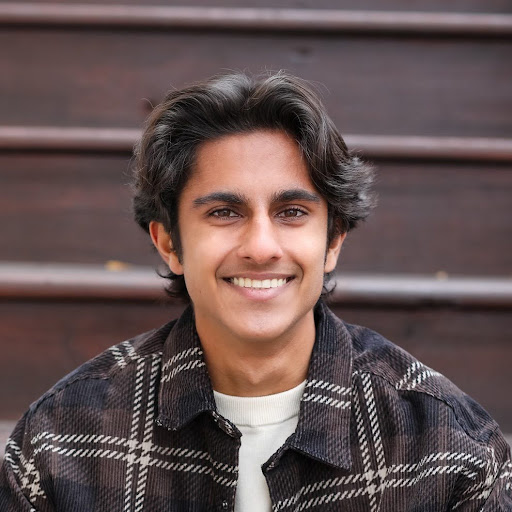

Archit Vig
Co-President
Archit, from Rochester, MI, co-founded OTHA in the Spring of 2024 and is passionate about promoting and destigmatizing organ donation and supporting patients throughout the transplant process. Archit conducts research on microfluidic artificial lungs at Michigan Medicine's Extracorporeal Life Support Lab and leads a project team focused on developing nutritionally assistive devices for children with cerebral palsy in Bangladesh. Archit also enjoys crocheting, gaming, and creating new devices in his free time.